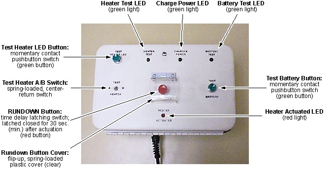
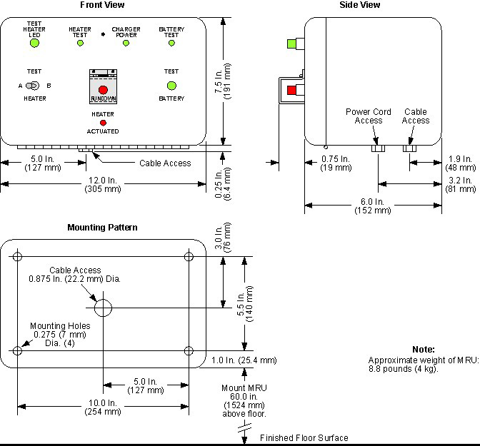
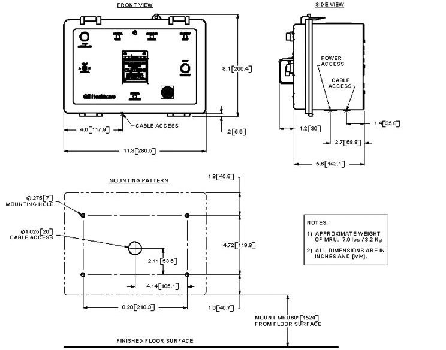
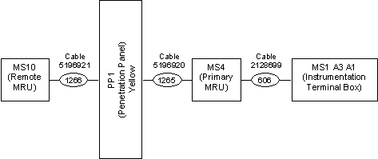
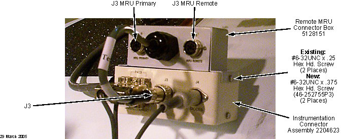
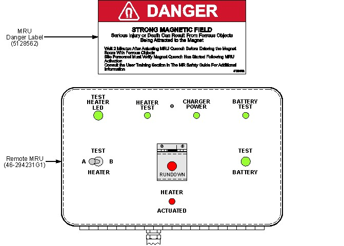

Operating Documentation
Direction 5500113, Rev# 3
Discovery MR750 3.0T Service Methods
Module Version 5.0, Version Date 3/31/10
Operating Documentation |
| Required Persons | Preliminary Reqs | Procedure | Finalization |
|---|---|---|---|
| 1 | Included in Procedure | 1 hr. for 1 MRU; 2.5 hrs. for 2 MRUs | Included in Procedure |
An MRU (shown below) is required to rapidly ramp down the magnet in an emergency situation. The Primary MRU is installed in the Magnet Room where the magnetic field is ≤200 gauss. If a Secondary MRU is installed, it is located and installed as dictated by local codes and where the magnetic field is ≤200 gauss.
Illustration 1: MRU Front Panel Layout, Labeling and Control Function Descriptions

| NOTE: | Illustration 1 shows the original MRU. The new MRU has a plastic cover over the Rundown button and does not have the cable attachment. |
| Item | Qty | Effectivity | Part# | Manufacturer | |
|---|---|---|---|---|---|
| Nonabsorbent Protective Clothing (long sleeve shirt and pants) | 1 set/person | - | - | - | |
| Electrically Insulating Gloves | 1 pr./person | - | - | - | |
| Safety Glasses | 1 pr./person | - | - | - | |
| Nonferrous Safety Shoes | 1 pr./person | - | - | - | |
| Brass Master Padlock with Brass Shackle | 1 | - | 46-194427P320 | - | |
| Brass Master Transition Padlock | 1 | - | 2387081 | - | |
| Black & White on Red Lockout Tag | 1 pkg. of 25 | - | 46-194427P322 | - | |
| Transition LOTO Tag | 1 | - | 46-194427P313 | - | |
| Line Cord Plug Cover, Plugs ≤3 in. (76 mm) wide x ≤5.875 in. (149 mm) long, Cords ≤1.25 in. (31 mm) diameter | 1 | - | 46-194427P321 | - | |
| MRU Operating and Service Manual | 1 | - | 5265188 | - | |
| Digital Voltmeter, 3.5 digit (Do not use a volt-ohm meter.) | 1 | - | - | - | |
| Titanium Tool Kit: Basic Set 5113258, Installation Set 5112581, or other nonferromagnetic tools (Magnets with magnetic fields >1.5T) | 1 kit | - | 5113258 or 5112581 | - | |
| HD Service Platform | 1 | HD, HDe, HDx, MR355/MR360 | 5155291 | - | |
| HDv Service Platform with Side Shield | 1 | MR450/MR750 | 5155291-2 | - | |
| Universal Service Ladder/Platform (G3 and LCC magnets) | 1 | Systems prior to HD | 2319156 | - | |
| Power Drill with 0.25 in. or 6 mm Drill Bit | 1 | - | - | - | |
| Stud Finder | 1 | - | - | - | |
| Vacuum Cleaner | 1 | - | - | - | |
| Level, 6 in. (150 mm) | 1 | - | - | - | |
| Item | Qty | Effectivity | Part# | Manufacturer |
|---|---|---|---|---|
| Cable Tie-Wraps | 20 min. | - | - | - |
| Isopropyl Alcohol | 1 bottle | - | - | - |
| Clean Rags | 5 | - | - | - |
| Item | Qty | Effectivity | Part# | Manufacturer | |
|---|---|---|---|---|---|
| New Primary MRU Kit | 1 | Forward Production Q3 2009 | 5180313 | - | |
| Original Remote MRU Kit (only for sites installing a second MRU) | 1 | - | 5128755 | - | |
| New Remote MRU Kit (only for sites installing a second MRU) | 1 | Forward Production Q3 2009 | 5180187 | - | |
| MRU Mounting Hardware, 0.25 in. or 6 mm diameter (bolts, wall anchors, etc. depending on mounting location); each capable of supporting 32 lb. (14.5 kg) | 4 sets/MRU | - | - | - | |
| Flat Washers, 0.25 in. or 6 mm diameter | 4 per MRU | - | - | - | |
| ||||
| Electrical Shock Hazard! | ||||
| Contact with MRU wiring while power is supplied can cause electrical shock. | ||||
| Follow OSHA Lockout-Tagout (LOTO) procedures while connecting input power wires to the MRU. |
| ||||
| Potential Injury! | ||||
| Material being drilled will scatter and drill bits could slip from the location being drilled or break during drilling operations. | ||||
| Wear appropriate personal protective equipment (PPE) during drilling operations: gloves, safety glasses and safety shoes. |
| Condition | Reference | Effectivity |
|---|---|---|
Verify that the magnetic field strength where the Primary MRU and optional Remote MRU will be installed is ≤200 gauss and the Remote MRU location is in compliance with local codes. | - | - |
| ||||
| The following procedure applies to both the original MRUs 2128700 / 5128755 and the new forward production MRUs 5180313 / 5180187. Any exception will be noted in the step. | ||||
LOTO the power feed to all MRUs being installed (Primary and/or Remote). Verify that no voltage is present by using a DVM or equivalent measuring device.
Install, adjust and mount the Primary MRU inside the Magnet Room and the Remote MRU in the Equipment Room. Each has to be 60 in. (1,524 mm) above the floor in conformance with the vendor's manual and in the location called out in the site drawing. (See Illustration 3.)
| NOTE: | Shipped MRUs are wired for 115 VAC at 50 to 60 Hz. Refer
to the vendor's service manual to:
|
Illustration 2: Dimensions for Mounting Original MRUs

Illustration 3: Dimensions for Mounting New MRUs

Run 606, route Cable 2128699 between the Primary MRU and the magnet with the 4-pin Lemo Connector P2 at the MRU end and the 5-pin Switchcraft Connector P3 at the magnet end.
See Illustration 5 or the wiring diagram in Magnet System Interconnects.
Do not connect Run 606 to Connector P2 of the MRU at this time.
Route Run 1266, Cable 5128149 (for original MRU) or Cable 5196921 (for new MRU) between the Remote MRU and the equipment room side of the Penetration Panel PP1 at J16 shown below.
Make sure the 4-pin Lemo Connector P2 end of Run 1266 is at the MRU.
Do not connect Run 1266 to Connector P2 of the MRU at this time.
Illustration 4: Remote MRU Penetration Panel Connections

| NOTE: | The wiring diagram for both single and dual MRU installations is shown in Magnet System Wiring. |
Refer to the appropriate block diagram for dual MRU cabling:
Illustration 5 shows the cabling for Original MRUs.
Illustration 6 shows the cabling for New MRUs.
Illustration 5: Connection Block Diagram (Original Primary and Remote MRU)

Illustration 6: Connection Block Diagram (Primary and Remote MRU)

(For original MRU) Run 1265, route Cable 2128150 between the magnet room side of the Penetration Panel at J16 and the magnet. Make sure the 5-pin Switchcraft Connector P3 is at the magnet.
(For new MRU) Run 1265, route Cable 5196920 between the magnet room side of the Penetration Panel at J16 and the Primary MRU. Make sure the 5-pin Switchcraft Connector P3 is at the Primary MRU.
Remove LOTO from both MRUs.
| ||||
| Verify that the batteries in each MRU are fully charged before connecting the MRU to the magnet. Charge the batteries for 24 hours if recharging is required. | ||||
Energize both MRUs.
Perform functional and battery checks of each MRU in conformance with the vendor service manual. Fully recharge the batteries as required.
| NOTE: | Functional checks of MRU operation are covered in Magnet Rundown Unit (MRU) Checks. |
(For Original MRUs 2128700 / 5128755) If installing both a primary and remote MRU, install the Remote MRU Connector Box 5128151 at Instrumentation Connector Assembly 2204623 on the magnet.
Remove the top two No. 6-32 UNC x 0.25 hex-head screws securing the Instrumentation Connector Assembly cover, one screw on each end. (See the illustration below.)
Illustration 7: Installing Remote MRU Connector Box on Instrumentation Connector Assembly

Secure Remote MRU Connector Box 5128151 to the Instrumentation Connector Assembly cover using the two replacement screws (No. 6-32 UNC x 0.375, 46-252755P3) from the Remote MRU Kit. (See Illustration 7.)
| NOTE: | Remote MRU Kit 5128755 contents are itemized in Remote MRU Kit 5128755. |
Plug the Remote MRU Connector Box's cable into Connector J3 of the Instrumentation Connector Assembly. (See Illustration 7 and Illustration 8.)
Illustration 8: Instrumentation Connector Assembly 2204623 (MS1-A3, A1)

| ||||
| POTENTIAL MAGNET QUENCH! | ||||
| before connecting the MRU to the magnet: | ||||
| make sure power to the MRU is on and the Rundown button is not depressed. |
| ||||
| Potential Magnet Quench! | ||||
| The magnet may quench if the RUNDOWN button on either the magnet room MRU or the operator room MRU is activated (depressed) for less than three minutes after either MRU receives AC power. | ||||
| Do not activate the RUNDOWN button while connecting cables to the MRU. |
| ||||
| Potential Magnet Quench! | ||||
| The magnet may quench if P2 is connected to J2 less than 3 minutes after any MRU being installed has received AC power | ||||
| Do not connect P2 to J2 within 3 minutes of powering on either MRU. |
Verify that input power to all MRUs is connected and turned on. Wait at least three minutes before connecting any other cables to either MRU to allow any depressed RUNDOWN button relay to disengage.
(For Original MRUs 2128700 / 5128755) Make cable connections.
If a Remote MRU is installed, connect the 4-pin Lemo Connector P2 end of Cable 5128149 (Run 1266) to J2 of the Remote MRU, located behind the cover of the MRU.
| NOTE: | Reference Illustration 5 and Magnet System Interconnects if necessary. |
Connect the 4-pin Lemo Connector P2 end of Cable 2128699 (Run 606) to the Primary MRU's J2, located behind the cover of the MRU.
If only a Primary MRU is installed, connect the 5-pin Switchcraft Connector P3 end of Cable 2128699 (Run 606) to J3 on Instrumentation Connector Assembly 2204623 at the magnet.
If both a Primary and a Remote MRU are installed:
Connect the 5-pin Switchcraft Connector P3 end of Cable 2128699 (Run 606) to J3 MRU Primary on the Remote MRU Connector Box 5128151 at the magnet.
Connect the 5-pin Switchcraft Connector P3 end of Cable 2128150 (Run 1265) to J3 MRU Remote on Remote MRU Connector Box 5128151 at the magnet.
(For new MRUs 5180313 / 5180187) Make cable connections.
If only a Primary MRU is installed:
Connect the 4-pin Lemo Connector P2 end of Cable 2128699 (Run 606) to J2 the Primary MRU, located behind the MRU's cover.
Connect the 5-pin Switchcraft Connector P3 end of Cable 2128699 (Run 606) to J3 on Instrumentation Connector Assembly 2204623 at the magnet.
If both a Primary and a Remote MRU are installed:
Connect the 4-pin Lemo Connector P2 end of Cable 5128149 (Run 1266) to J1 of the Remote MRU, located behind the cover of the Remote MRU.
Connect the 9-pin D-sub end of Cable 5128149 (Run 1266) to J16 of the Penetration Panel, located on the Equipment Room side.
Connect the 9-pin D-sub end of the Cable 5128150 (Run 1265) to J16 of the Penetration Panel, located on the Magnet Room side.
Connect the 5-pin Switchcraft Connector P3 end of Cable 5128150 (Run 1265) to J6 of the Primary MRU, located behind the cover of the Primary MRU.
Connect the 5-pin Switchcraft Connector P3 end of Cable 2128699 (Run 606) to J3 on Instrumentation Connector Assembly 2204623 at the magnet.
Install MRU Danger Label 5128562 (shown below) centered above the Remote MRU, if one is being installed. Make sure to clean the surface for the decal with isopropyl alcohol and a clean rag before adhering the decal to the surface.
Illustration 9: MRU Danger Label 5128562

| ||||
| Potential Health Hazard! | ||||
| Loose material produced during drilling could cause a health issue. | ||||
| Make sure to clean up after drilling. |
| ||||
| Any loose metal filings produced during drilling could become a source of spike noise. Make sure to clean up after drilling through any metallic material. | ||||
Use a vacuum cleaner to clean up in the area where drilling occurred.
No finalization steps.